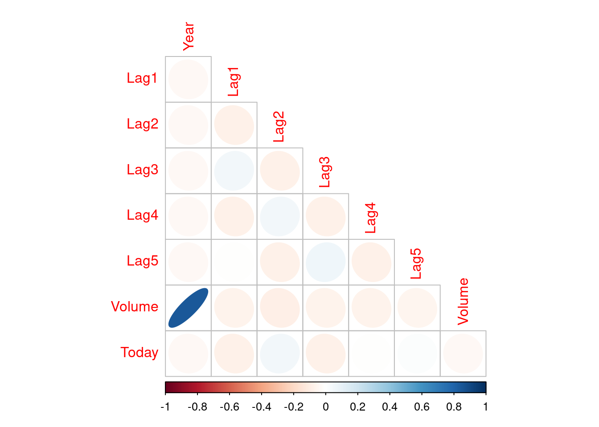
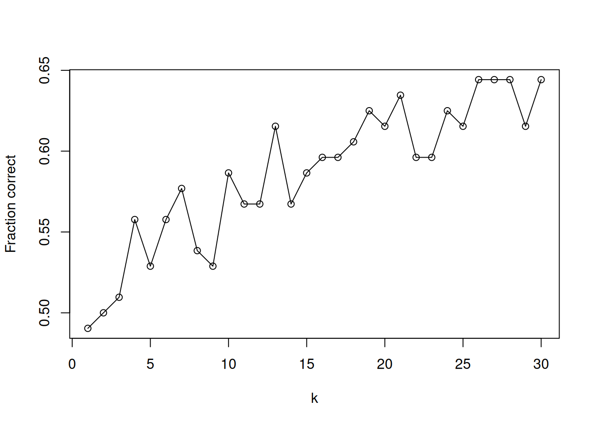
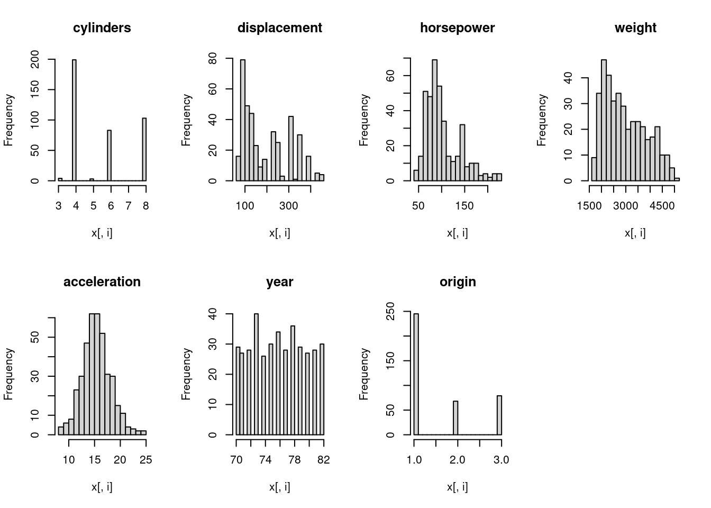
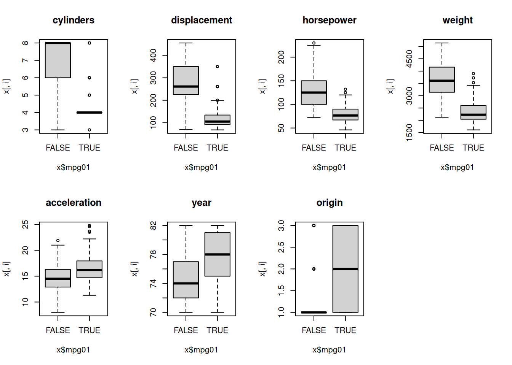
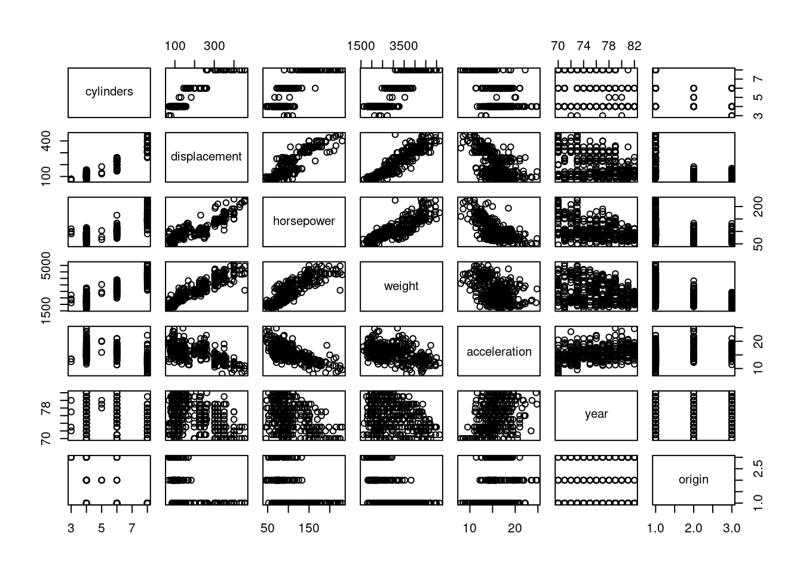
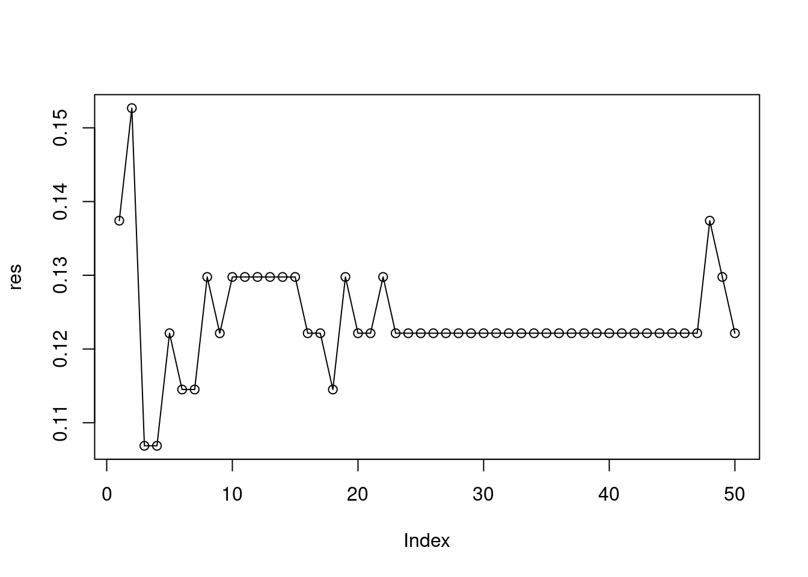
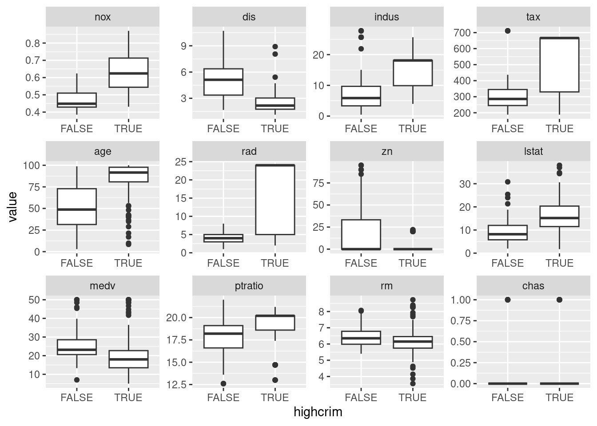
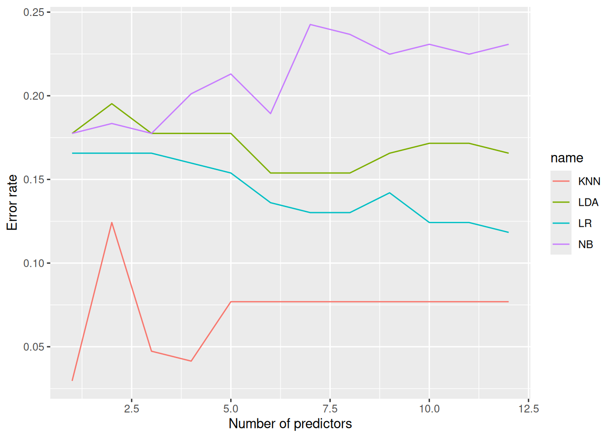
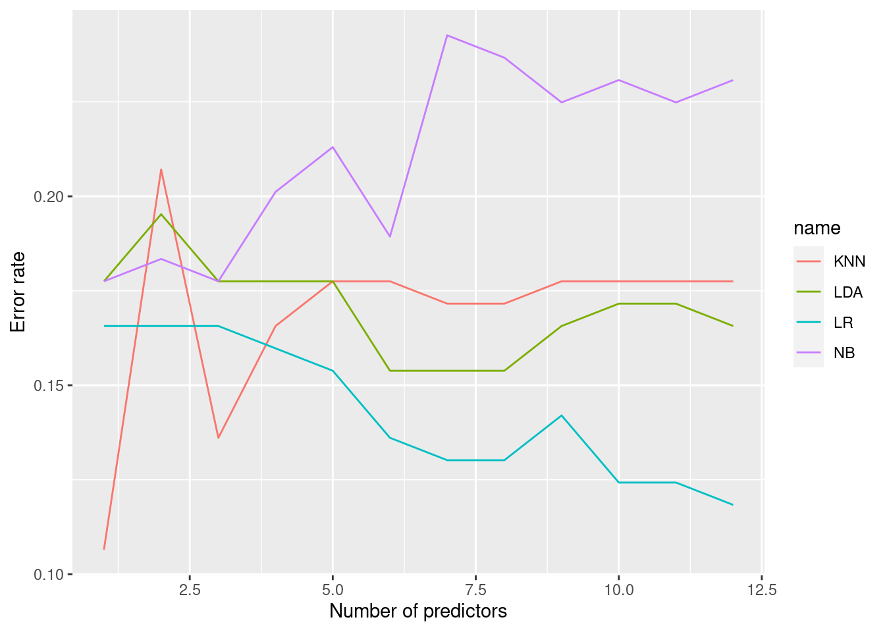

4 Classification
4.1 Conceptual
4.1.1 Question 1
Using a little bit of algebra, prove that (4.2) is equivalent to (4.3). In other words, the logistic function representation and logit representation for the logistic regression model are equivalent.
We need to show that
\[ p(X) = \frac{e^{\beta_0 + \beta_1X}}{1 + e^{\beta_0 + \beta_1X}} \]
is equivalent to
\[ \frac{p(X)}{1-p(X)} = e^{\beta_0 + \beta_1X} \]
Letting \(x = e^{\beta_0 + \beta_1X}\)
\[\begin{align} \frac{P(X)}{1-p(X)} &= \frac{\frac{x}{1 + x}} {1 - \frac{x}{1 + x}} \\ &= \frac{\frac{x}{1 + x}} {\frac{1}{1 + x}} \\ &= x \end{align}\]
4.1.2 Question 2
It was stated in the text that classifying an observation to the class for which (4.12) is largest is equivalent to classifying an observation to the class for which (4.13) is largest. Prove that this is the case. In other words, under the assumption that the observations in the \(k\)th class are drawn from a \(N(\mu_k,\sigma^2)\) distribution, the Bayes’ classifier assigns an observation to the class for which the discriminant function is maximized.
4.12 is
\[ p_k(x) = \frac{\pi_k\frac{1}{\sqrt{2\pi\sigma}} \exp(-\frac{1}{2\sigma^2}(x - \mu_k)^2)} {\sum_{l=1}^k \pi_l\frac{1}{\sqrt{2\pi\sigma}} \exp(-\frac{1}{2\sigma^2}(x - \mu_l)^2)} \]
and the discriminant function is
\[ \delta_k(x) = x.\frac{\mu_k}{\sigma^2} - \frac{\mu_k^2}{2\sigma_2} + \log(\pi_k) \]
Since \(\sigma^2\) is constant
\[ p_k(x) = \frac{\pi_k \exp\left(-\frac{1}{2\sigma^2}(x - \mu_k)^2\right)} {\sum_{l=1}^k \pi_l \exp\left(-\frac{1}{2\sigma^2}(x - \mu_l)^2\right)} \]
Maximizing \(p_k(x)\) also maximizes any monotonic function of \(p_k(X)\), and therefore, we can consider maximizing \(\log(p_K(X))\)
\[ \log(p_k(x)) = \log(\pi_k) - \frac{1}{2\sigma^2}(x - \mu_k)^2 - \log\left(\sum_{l=1}^k \pi_l \exp\left(-\frac{1}{2\sigma^2}(x - \mu_l)^2\right)\right) \]
Remember that we are maximizing over \(k\), and since the last term does not vary with \(k\) it can be ignored. So we just need to maximize
\[\begin{align} f &= \log(\pi_k) - \frac{1}{2\sigma^2} (x^2 - 2x\mu_k + \mu_k^2) \\ &= \log(\pi_k) - \frac{x^2}{2\sigma^2} + \frac{x\mu_k}{\sigma^2} - \frac{\mu_k^2}{2\sigma^2} \\ \end{align}\]
Since \(\frac{x^2}{2\sigma^2}\) is also independent of \(k\), we just need to maximize
\[ \log(\pi_k) + \frac{x\mu_k}{\sigma^2} - \frac{\mu_k^2}{2\sigma^2} \]
4.1.3 Question 3
This problem relates to the QDA model, in which the observations within each class are drawn from a normal distribution with a class-specific mean vector and a class specific covariance matrix. We consider the simple case where \(p = 1\); i.e. there is only one feature.
Suppose that we have \(K\) classes, and that if an observation belongs to the \(k\)th class then \(X\) comes from a one-dimensional normal distribution, \(X \sim N(\mu_k,\sigma^2)\). Recall that the density function for the one-dimensional normal distribution is given in (4.16). Prove that in this case, the Bayes classifier is not linear. Argue that it is in fact quadratic.
Hint: For this problem, you should follow the arguments laid out in Section 4.4.1, but without making the assumption that \(\sigma_1^2 = ... = \sigma_K^2\).
As above,
\[ p_k(x) = \frac{\pi_k\frac{1}{\sqrt{2\pi\sigma_k}} \exp(-\frac{1}{2\sigma_k^2}(x - \mu_k)^2)} {\sum_{l=1}^k \pi_l\frac{1}{\sqrt{2\pi\sigma_l}} \exp(-\frac{1}{2\sigma_l^2}(x - \mu_l)^2)} \]
Now lets derive the Bayes classifier, without assuming \(\sigma_1^2 = ... = \sigma_K^2\)
Maximizing \(p_k(x)\) also maximizes any monotonic function of \(p_k(X)\), and therefore, we can consider maximizing \(\log(p_K(X))\)
\[ \log(p_k(x)) = \log(\pi_k) + \log\left(\frac{1}{\sqrt{2\pi\sigma_k}}\right) - \frac{1}{2\sigma_k^2}(x - \mu_k)^2 - \log\left(\sum_{l=1}^k \frac{1}{\sqrt{2\pi\sigma_l}} \pi_l \exp\left(-\frac{1}{2\sigma_l^2}(x - \mu_l)^2\right)\right) \]
Remember that we are maximizing over \(k\), and since the last term does not vary with \(k\) it can be ignored. So we just need to maximize
\[\begin{align} f &= \log(\pi_k) + \log\left(\frac{1}{\sqrt{2\pi\sigma_k}}\right) - \frac{1}{2\sigma_k^2}(x - \mu_k)^2 \\ &= \log(\pi_k) + \log\left(\frac{1}{\sqrt{2\pi\sigma_k}}\right) - \frac{x^2}{2\sigma_k^2} + \frac{x\mu_k}{\sigma_k^2} - \frac{\mu_k^2}{2\sigma_k^2} \\ \end{align}\]
However, unlike in Q2, \(\frac{x^2}{2\sigma_k^2}\) is not independent of \(k\), so we retain the term with \(x^2\), hence \(f\), the Bayes’ classifier, is a quadratic function of \(x\).
4.1.4 Question 4
When the number of features \(p\) is large, there tends to be a deterioration in the performance of KNN and other local approaches that perform prediction using only observations that are near the test observation for which a prediction must be made. This phenomenon is known as the curse of dimensionality, and it ties into the fact that non-parametric approaches often perform poorly when \(p\) is large. We will now investigate this curse.
- Suppose that we have a set of observations, each with measurements on \(p = 1\) feature, \(X\). We assume that \(X\) is uniformly (evenly) distributed on \([0, 1]\). Associated with each observation is a response value. Suppose that we wish to predict a test observation’s response using only observations that are within 10% of the range of \(X\) closest to that test observation. For instance, in order to predict the response for a test observation with \(X = 0.6\), we will use observations in the range \([0.55, 0.65]\). On average, what fraction of the available observations will we use to make the prediction?
For values in \(0...0.05\), we use less than 10% of observations (between 5% and 10%, 7.5% on average), similarly with values in \(0.95...1\). For values in \(0.05...0.95\) we use 10% of available observations. The (weighted) average is then \(7.5 \times 0.1 + 10 \times 0.9 = 9.75\%\).
- Now suppose that we have a set of observations, each with measurements on \(p = 2\) features, \(X_1\) and \(X_2\). We assume that \((X_1, X_2)\) are uniformly distributed on \([0, 1] \times [0, 1]\). We wish to predict a test observation’s response using only observations that are within 10% of the range of \(X_1\) and within 10% of the range of \(X_2\) closest to that test observation. For instance, in order to predict the response for a test observation with \(X_1 = 0.6\) and \(X_2 = 0.35\), we will use observations in the range \([0.55, 0.65]\) for \(X_1\) and in the range \([0.3, 0.4]\) for \(X_2\). On average, what fraction of the available observations will we use to make the prediction?
Since we need the observation to be within range for \(X_1\) and \(X_2\) we square 9.75% = \(0.0975^2 \times 100 = 0.95\%\)
- Now suppose that we have a set of observations on \(p = 100\) features. Again the observations are uniformly distributed on each feature, and again each feature ranges in value from 0 to 1. We wish to predict a test observation’s response using observations within the 10% of each feature’s range that is closest to that test observation. What fraction of the available observations will we use to make the prediction?
Similar to above, we use: \(0.0975^{100} \times 100 = 8 \times 10^{-100}\%\), essentially zero.
- Using your answers to parts (a)–(c), argue that a drawback of KNN when \(p\) is large is that there are very few training observations “near” any given test observation.
As \(p\) increases, the fraction of observations near any given point rapidly approaches zero. For instance, even if you use 50% of the nearest observations for each \(p\), with \(p = 10\), only \(0.5^{10} \times 100 \approx 0.1\%\) points are “near”.
- Now suppose that we wish to make a prediction for a test observation by creating a \(p\)-dimensional hypercube centered around the test observation that contains, on average, 10% of the training observations. For \(p = 1,2,\) and \(100\), what is the length of each side of the hypercube? Comment on your answer.
Note: A hypercube is a generalization of a cube to an arbitrary number of dimensions. When \(p = 1\), a hypercube is simply a line segment, when \(p = 2\) it is a square, and when \(p = 100\) it is a 100-dimensional cube.
When \(p = 1\), clearly the length is 0.1. When \(p = 2\), we need the value \(l\) such that \(l^2 = 0.1\), so \(l = \sqrt{0.1} = 0.32\). When \(p = n\), \(l = 0.1^{1/n}\), so in the case of \(n = 100\), \(l = 0.98\). Therefore, the length of each side of the hypercube rapidly approaches 1 (or 100%) of the range of each \(p\).
4.1.5 Question 5
We now examine the differences between LDA and QDA.
- If the Bayes decision boundary is linear, do we expect LDA or QDA to perform better on the training set? On the test set?
QDA, being a more flexible model, will always perform better on the training set, but LDA would be expected to perform better on the test set.
- If the Bayes decision boundary is non-linear, do we expect LDA or QDA to perform better on the training set? On the test set?
QDA, being a more flexible model, will perform better on the training set, and we would hope that extra flexibility translates to a better fit on the test set.
- In general, as the sample size \(n\) increases, do we expect the test prediction accuracy of QDA relative to LDA to improve, decline, or be unchanged? Why?
As \(n\) increases, we would expect the prediction accuracy of QDA relative to LDA to improve as there is more data to fit to subtle effects in the data.
- True or False: Even if the Bayes decision boundary for a given problem is linear, we will probably achieve a superior test error rate using QDA rather than LDA because QDA is flexible enough to model a linear decision boundary. Justify your answer.
False. QDA can overfit leading to poorer test performance.
4.1.6 Question 6
Suppose we collect data for a group of students in a statistics class with variables \(X_1 =\) hours studied, \(X_2 =\) undergrad GPA, and \(Y =\) receive an A. We fit a logistic regression and produce estimated coefficient, \(\hat\beta_0 = -6\), \(\hat\beta_1 = 0.05\), \(\hat\beta_2 = 1\).
- Estimate the probability that a student who studies for 40h and has an undergrad GPA of 3.5 gets an A in the class.
The logistic model is:
\[ \log\left(\frac{p(X)}{1-p(x)}\right) = -6 + 0.05X_1 + X_2 \]
or
\[ p(X) = \frac{e^{-6 + 0.05X_1 + X_2}}{1 + e^{-6 + 0.05X_1 + X_2}} \]
when \(X_1 = 40\) and \(X_2 = 3.5\), \(p(X) = 0.38\)
- How many hours would the student in part (a) need to study to have a 50% chance of getting an A in the class?
We would like to solve for \(X_1\) where \(p(X) = 0.5\). Taking the first equation above, we need to solve \(0 = −6 + 0.05X_1 + 3.5\), so \(X_1 = 50\) hours.
4.1.7 Question 7
Suppose that we wish to predict whether a given stock will issue a dividend this year (“Yes” or “No”) based on \(X\), last year’s percent profit. We examine a large number of companies and discover that the mean value of \(X\) for companies that issued a dividend was \(\bar{X} = 10\), while the mean for those that didn’t was \(\bar{X} = 0\). In addition, the variance of \(X\) for these two sets of companies was \(\hat{\sigma}^2 = 36\). Finally, 80% of companies issued dividends. Assuming that \(X\) follows a normal distribution, predict the probability that a company will issue a dividend this year given that its percentage profit was \(X = 4\) last year.
Hint: Recall that the density function for a normal random variable is \(f(x) =\frac{1}{\sqrt{2\pi\sigma^2}}e^{-(x-\mu)^2/2\sigma^2}\). You will need to use Bayes’ theorem.
Value \(v\) for companies (D) issuing a dividend = \(v_D \sim \mathcal{N}(10, 36)\). Value \(v\) for companies (N) not issuing a dividend = \(v_N \sim \mathcal{N}(0, 36)\) and \(p(D) = 0.8\).
We want to find \(p(D|v)\) and we can calculate \(p(v|D)\) from the Gaussian density function. Note that since \(e^2\) is equal between both classes, the term \(\frac{1}{\sqrt{2\pi\sigma^2}}\) cancels.
\[\begin{align} p(D|v) &= \frac{p(v|D) p(D)}{p(v|D)p(D) + p(v|N)p(N)} \\ &= \frac{\pi_D \frac{1}{\sqrt{2\pi\sigma^2}} e^{-(x-\mu_D)^2/2\sigma^2}} {\pi_D \frac{1}{\sqrt{2\pi\sigma^2}} e^{-(x-\mu_D)^2/2\sigma^2} + \pi_N \frac{1}{\sqrt{2\pi\sigma^2}} e^{-(x-\mu_N)^2/2\sigma^2}} \\ &= \frac{\pi_D e^{-(x-\mu_D)^2/2\sigma^2}} {\pi_D e^{-(x-\mu_D)^2/2\sigma^2} + \pi_N e^{-(x-\mu_N)^2/2\sigma^2}} \\ &= \frac{0.8 \times e^{-(4-10)^2/(2 \times 36)}} {0.8 \times e^{-(4-10)^2/(2 \times 36)} + 0.2 \times e^{-(4-0)^2/(2 \times 36)}} \\ &= \frac{0.8 e^{-1/2}}{0.8 e^{-1/2} + 0.2 e^{-2/9}} \end{align}\]
exp(-0.5) * 0.8 / (exp(-0.5) * 0.8 + exp(-2/9) * 0.2)## [1] 0.75185254.1.8 Question 8
Suppose that we take a data set, divide it into equally-sized training and test sets, and then try out two different classification procedures. First we use logistic regression and get an error rate of 20% on the training data and 30% on the test data. Next we use 1-nearest neighbors (i.e. \(K = 1\)) and get an average error rate (averaged over both test and training data sets) of 18%. Based on these results, which method should we prefer to use for classification of new observations? Why?
For \(K = 1\), performance on the training set is perfect and the error rate is zero, implying a test error rate of 36%. Logistic regression outperforms 1-nearest neighbor on the test set and therefore should be preferred.
4.1.9 Question 9
This problem has to do with odds.
- On average, what fraction of people with an odds of 0.37 of defaulting on their credit card payment will in fact default?
Odds is defined as \(p/(1-p)\).
\[0.37 = \frac{p(x)}{1 - p(x)}\]
therefore,
\[p(x) = \frac{0.37}{1 + 0.37} = 0.27\]
- Suppose that an individual has a 16% chance of defaulting on her credit card payment. What are the odds that she will default?
\[0.16 / (1 - 0.16) = 0.19\]
4.1.10 Question 10
Equation 4.32 derived an expression for \(\log(\frac{Pr(Y=k|X=x)}{Pr(Y=K|X=x)})\) in the setting where \(p > 1\), so that the mean for the \(k\)th class, \(\mu_k\), is a \(p\)-dimensional vector, and the shared covariance \(\Sigma\) is a \(p \times p\) matrix. However, in the setting with \(p = 1\), (4.32) takes a simpler form, since the means \(\mu_1, ..., \mu_k\) and the variance \(\sigma^2\) are scalars. In this simpler setting, repeat the calculation in (4.32), and provide expressions for \(a_k\) and \(b_{kj}\) in terms of \(\pi_k, \pi_K, \mu_k, \mu_K,\) and \(\sigma^2\).
\[\begin{align*} \log\left(\frac{Pr(Y=k|X=x)}{Pr(Y=K|X=x)}\right) & = \log\left(\frac{\pi_k f_k(x)}{\pi_K f_K(x)}\right) \\ & = \log\left(\frac{\pi_k \exp(-1/2((x-\mu_k)/\sigma)^2)}{\pi_K \exp(-1/2((x-\mu_K)/\sigma)^2)}\right) \\ & = \log\left(\frac{\pi_k}{\pi_K}\right) - \frac{1}{2} \left(\frac{x-\mu_k}{\sigma}\right)^2 + \frac{1}{2} \left(\frac{x-\mu_K}{\sigma}\right)^2 \\ & = \log\left(\frac{\pi_k}{\pi_K}\right) - \frac{1}{2\sigma^2} (x-\mu_k)^2 + \frac{1}{2\sigma^2} (x-\mu_K)^2 \\ & = \log\left(\frac{\pi_k}{\pi_K}\right) - \frac{1}{2\sigma^2} \left((x-\mu_k)^2 - (x-\mu_K)^2\right) \\ & = \log\left(\frac{\pi_k}{\pi_K}\right) - \frac{1}{2\sigma^2} \left(x^2-2x\mu_k+\mu_k^2 - x^2 + 2x\mu_K - \mu_K^2\right) \\ & = \log\left(\frac{\pi_k}{\pi_K}\right) - \frac{1}{2\sigma^2} \left(2x(\mu_K - \mu_k) + \mu_k^2 -\mu_K^2\right) \\ & = \log\left(\frac{\pi_k}{\pi_K}\right) - \frac{\mu_k^2 -\mu_K^2}{2\sigma^2} + \frac{x(\mu_k - \mu_K)}{\sigma^2} \end{align*}\]
Therefore,
\[a_k = \log\left(\frac{\pi_k}{\pi_K}\right) - \frac{\mu_k^2 -\mu_K^2}{2\sigma^2}\]
and
\[b_k = (\mu_k - \mu_K) / \sigma^2\]
4.1.11 Question 11
ToDo
Work out the detailed forms of \(a_k\), \(b_{kj}\), and \(b_{kjl}\) in (4.33). Your answer should involve \(\pi_k\), \(\pi_K\), \(\mu_k\), \(\mu_K\), \(\Sigma_k\), and \(\Sigma_K\).
4.1.12 Question 12
Suppose that you wish to classify an observation \(X \in \mathbb{R}\) into
applesandoranges. You fit a logistic regression model and find that\[ \hat{Pr}(Y=orange|X=x) = \frac{\exp(\hat\beta_0 + \hat\beta_1x)}{1 + \exp(\hat\beta_0 + \hat\beta_1x)} \]
Your friend fits a logistic regression model to the same data using the softmax formulation in (4.13), and finds that
\[ \hat{Pr}(Y=orange|X=x) = \frac{\exp(\hat\alpha_{orange0} + \hat\alpha_{orange1}x)} {\exp(\hat\alpha_{orange0} + \hat\alpha_{orange1}x) + \exp(\hat\alpha_{apple0} + \hat\alpha_{apple1}x)} \]
- What is the log odds of
orangeversusapplein your model?
The log odds is just \(\hat\beta_0 + \hat\beta_1x\)
- What is the log odds of
orangeversusapplein your friend’s model?
From 4.14, log odds of our friend’s model is:
\[ (\hat\alpha_{orange0} - \hat\alpha_{apple0}) + (\hat\alpha_{orange1} - \hat\alpha_{apple1})x \]
- Suppose that in your model, \(\hat\beta_0 = 2\) and \(\hat\beta = −1\). What are the coefficient estimates in your friend’s model? Be as specific as possible.
We can say that in our friend’s model \(\hat\alpha_{orange0} - \hat\alpha_{apple0} = 2\) and \(\hat\alpha_{orange1} - \hat\alpha_{apple1} = -1\).
We are unable to know the specific value of each parameter however.
- Now suppose that you and your friend fit the same two models on a different data set. This time, your friend gets the coefficient estimates \(\hat\alpha_{orange0} = 1.2\), \(\hat\alpha_{orange1} = −2\), \(\hat\alpha_{apple0} = 3\), \(\hat\alpha_{apple1} = 0.6\). What are the coefficient estimates in your model?
The coefficients in our model would be \(\hat\beta_0 = 1.2 - 3 = -1.8\) and \(\hat\beta_1 = -2 - 0.6 = -2.6\)
- Finally, suppose you apply both models from (d) to a data set with 2,000 test observations. What fraction of the time do you expect the predicted class labels from your model to agree with those from your friend’s model? Explain your answer.
The models are identical with different parameterization so they should perfectly agree.
4.2 Applied
4.2.1 Question 13
This question should be answered using the
Weeklydata set, which is part of theISLR2package. This data is similar in nature to theSmarketdata from this chapter’s lab, except that it contains 1,089 weekly returns for 21 years, from the beginning of 1990 to the end of 2010.
- Produce some numerical and graphical summaries of the
Weeklydata. Do there appear to be any patterns?
library(MASS)
library(class)
library(tidyverse)
library(corrplot)
library(ISLR2)
library(e1071)summary(Weekly)## Year Lag1 Lag2 Lag3
## Min. :1990 Min. :-18.1950 Min. :-18.1950 Min. :-18.1950
## 1st Qu.:1995 1st Qu.: -1.1540 1st Qu.: -1.1540 1st Qu.: -1.1580
## Median :2000 Median : 0.2410 Median : 0.2410 Median : 0.2410
## Mean :2000 Mean : 0.1506 Mean : 0.1511 Mean : 0.1472
## 3rd Qu.:2005 3rd Qu.: 1.4050 3rd Qu.: 1.4090 3rd Qu.: 1.4090
## Max. :2010 Max. : 12.0260 Max. : 12.0260 Max. : 12.0260
## Lag4 Lag5 Volume Today
## Min. :-18.1950 Min. :-18.1950 Min. :0.08747 Min. :-18.1950
## 1st Qu.: -1.1580 1st Qu.: -1.1660 1st Qu.:0.33202 1st Qu.: -1.1540
## Median : 0.2380 Median : 0.2340 Median :1.00268 Median : 0.2410
## Mean : 0.1458 Mean : 0.1399 Mean :1.57462 Mean : 0.1499
## 3rd Qu.: 1.4090 3rd Qu.: 1.4050 3rd Qu.:2.05373 3rd Qu.: 1.4050
## Max. : 12.0260 Max. : 12.0260 Max. :9.32821 Max. : 12.0260
## Direction
## Down:484
## Up :605
##
##
##
## corrplot(cor(Weekly[, -9]), type = "lower", diag = FALSE, method = "ellipse")
Volume is strongly positively correlated with Year. Other correlations are week, but Lag1 is negatively correlated with Lag2 but positively correlated with Lag3.
- Use the full data set to perform a logistic regression with
Directionas the response and the five lag variables plusVolumeas predictors. Use the summary function to print the results. Do any of the predictors appear to be statistically significant? If so, which ones?
fit <- glm(
Direction ~ Lag1 + Lag2 + Lag3 + Lag4 + Lag5 + Volume,
data = Weekly,
family = binomial
)
summary(fit)##
## Call:
## glm(formula = Direction ~ Lag1 + Lag2 + Lag3 + Lag4 + Lag5 +
## Volume, family = binomial, data = Weekly)
##
## Coefficients:
## Estimate Std. Error z value Pr(>|z|)
## (Intercept) 0.26686 0.08593 3.106 0.0019 **
## Lag1 -0.04127 0.02641 -1.563 0.1181
## Lag2 0.05844 0.02686 2.175 0.0296 *
## Lag3 -0.01606 0.02666 -0.602 0.5469
## Lag4 -0.02779 0.02646 -1.050 0.2937
## Lag5 -0.01447 0.02638 -0.549 0.5833
## Volume -0.02274 0.03690 -0.616 0.5377
## ---
## Signif. codes: 0 '***' 0.001 '**' 0.01 '*' 0.05 '.' 0.1 ' ' 1
##
## (Dispersion parameter for binomial family taken to be 1)
##
## Null deviance: 1496.2 on 1088 degrees of freedom
## Residual deviance: 1486.4 on 1082 degrees of freedom
## AIC: 1500.4
##
## Number of Fisher Scoring iterations: 4Lag2 is significant.
- Compute the confusion matrix and overall fraction of correct predictions. Explain what the confusion matrix is telling you about the types of mistakes made by logistic regression.
contrasts(Weekly$Direction)## Up
## Down 0
## Up 1pred <- predict(fit, type = "response") > 0.5
(t <- table(ifelse(pred, "Up (pred)", "Down (pred)"), Weekly$Direction))##
## Down Up
## Down (pred) 54 48
## Up (pred) 430 557sum(diag(t)) / sum(t)## [1] 0.5610652The overall fraction of correct predictions is 0.56. Although logistic regression correctly predicts upwards movements well, it incorrectly predicts most downwards movements as up.
- Now fit the logistic regression model using a training data period from 1990 to 2008, with
Lag2as the only predictor. Compute the confusion matrix and the overall fraction of correct predictions for the held out data (that is, the data from 2009 and 2010).
train <- Weekly$Year < 2009
fit <- glm(Direction ~ Lag2, data = Weekly[train, ], family = binomial)
pred <- predict(fit, Weekly[!train, ], type = "response") > 0.5
(t <- table(ifelse(pred, "Up (pred)", "Down (pred)"), Weekly[!train, ]$Direction))##
## Down Up
## Down (pred) 9 5
## Up (pred) 34 56sum(diag(t)) / sum(t)## [1] 0.625
- Repeat (d) using LDA.
fit <- lda(Direction ~ Lag2, data = Weekly[train, ])
pred <- predict(fit, Weekly[!train, ], type = "response")$class
(t <- table(pred, Weekly[!train, ]$Direction))##
## pred Down Up
## Down 9 5
## Up 34 56sum(diag(t)) / sum(t)## [1] 0.625
- Repeat (d) using QDA.
fit <- qda(Direction ~ Lag2, data = Weekly[train, ])
pred <- predict(fit, Weekly[!train, ], type = "response")$class
(t <- table(pred, Weekly[!train, ]$Direction))##
## pred Down Up
## Down 0 0
## Up 43 61sum(diag(t)) / sum(t)## [1] 0.5865385
- Repeat (d) using KNN with \(K = 1\).
fit <- knn(
Weekly[train, "Lag2", drop = FALSE],
Weekly[!train, "Lag2", drop = FALSE],
Weekly$Direction[train]
)
(t <- table(fit, Weekly[!train, ]$Direction))##
## fit Down Up
## Down 21 29
## Up 22 32sum(diag(t)) / sum(t)## [1] 0.5096154
- Repeat (d) using naive Bayes.
fit <- naiveBayes(Direction ~ Lag2, data = Smarket, subset = train)
pred <- predict(fit, Weekly[!train, ], type = "class")
(t <- table(pred, Weekly[!train, ]$Direction))##
## pred Down Up
## Down 27 29
## Up 16 32sum(diag(t)) / sum(t)## [1] 0.5673077
- Which of these methods appears to provide the best results on this data?
Logistic regression and LDA are the best performing.
- Experiment with different combinations of predictors, including possible transformations and interactions, for each of the methods. Report the variables, method, and associated confusion matrix that appears to provide the best results on the held out data. Note that you should also experiment with values for \(K\) in the KNN classifier.
fit <- glm(Direction ~ Lag1, data = Weekly[train, ], family = binomial)
pred <- predict(fit, Weekly[!train, ], type = "response") > 0.5
mean(ifelse(pred, "Up", "Down") == Weekly[!train, ]$Direction)## [1] 0.5673077fit <- glm(Direction ~ Lag3, data = Weekly[train, ], family = binomial)
pred <- predict(fit, Weekly[!train, ], type = "response") > 0.5
mean(ifelse(pred, "Up", "Down") == Weekly[!train, ]$Direction)## [1] 0.5865385fit <- glm(Direction ~Lag4, data = Weekly[train, ], family = binomial)
pred <- predict(fit, Weekly[!train, ], type = "response") > 0.5
mean(ifelse(pred, "Up", "Down") == Weekly[!train, ]$Direction)## [1] 0.5865385fit <- glm(Direction ~ Lag1 + Lag2 + Lag3 + Lag4, data = Weekly[train, ], family = binomial)
pred <- predict(fit, Weekly[!train, ], type = "response") > 0.5
mean(ifelse(pred, "Up", "Down") == Weekly[!train, ]$Direction)## [1] 0.5865385fit <- glm(Direction ~ Lag1 * Lag2 * Lag3 * Lag4, data = Weekly[train, ], family = binomial)
pred <- predict(fit, Weekly[!train, ], type = "response") > 0.5
mean(ifelse(pred, "Up", "Down") == Weekly[!train, ]$Direction)## [1] 0.5961538fit <- lda(Direction ~ Lag1 + Lag2 + Lag3 + Lag4,data = Weekly[train, ])
pred <- predict(fit, Weekly[!train, ], type = "response")$class
mean(pred == Weekly[!train, ]$Direction)## [1] 0.5769231fit <- qda(Direction ~ Lag1 + Lag2 + Lag3 + Lag4, data = Weekly[train, ])
pred <- predict(fit, Weekly[!train, ], type = "response")$class
mean(pred == Weekly[!train, ]$Direction)## [1] 0.5192308fit <- naiveBayes(Direction ~ Lag1 + Lag2 + Lag3 + Lag4, data = Weekly[train, ])
pred <- predict(fit, Weekly[!train, ], type = "class")
mean(pred == Weekly[!train, ]$Direction)## [1] 0.5096154set.seed(1)
res <- sapply(1:30, function(k) {
fit <- knn(
Weekly[train, 2:4, drop = FALSE],
Weekly[!train, 2:4, drop = FALSE],
Weekly$Direction[train],
k = k
)
mean(fit == Weekly[!train, ]$Direction)
})
plot(1:30, res, type = "o", xlab = "k", ylab = "Fraction correct")
(k <- which.max(res))## [1] 26fit <- knn(
Weekly[train, 2:4, drop = FALSE],
Weekly[!train, 2:4, drop = FALSE],
Weekly$Direction[train],
k = k
)
table(fit, Weekly[!train, ]$Direction)##
## fit Down Up
## Down 23 18
## Up 20 43mean(fit == Weekly[!train, ]$Direction)## [1] 0.6346154KNN using the first 3 Lag variables performs marginally better than logistic
regression with Lag2 if we tune \(k\) to be \(k = 26\).
4.2.2 Question 14
In this problem, you will develop a model to predict whether a given car gets high or low gas mileage based on the
Autodata set.
- Create a binary variable,
mpg01, that contains a 1 ifmpgcontains a value above its median, and a 0 ifmpgcontains a value below its median. You can compute the median using themedian()function. Note you may find it helpful to use thedata.frame()function to create a single data set containing bothmpg01and the otherAutovariables.
x <- cbind(Auto[, -1], data.frame("mpg01" = Auto$mpg > median(Auto$mpg)))
- Explore the data graphically in order to investigate the association between
mpg01and the other features. Which of the other features seem most likely to be useful in predictingmpg01? Scatterplots and boxplots may be useful tools to answer this question. Describe your findings.
par(mfrow = c(2, 4))
for (i in 1:7) hist(x[, i], breaks = 20, main = colnames(x)[i])
par(mfrow = c(2, 4))
for (i in 1:7) boxplot(x[, i] ~ x$mpg01, main = colnames(x)[i])
pairs(x[, 1:7])
Most variables show an association with mpg01 category, and several
variables are colinear.
- Split the data into a training set and a test set.
set.seed(1)
train <- sample(seq_len(nrow(x)), nrow(x) * 2/3)
- Perform LDA on the training data in order to predict
mpg01using the variables that seemed most associated withmpg01in (b). What is the test error of the model obtained?
sort(sapply(1:7, function(i) {
setNames(abs(t.test(x[, i] ~ x$mpg01)$statistic), colnames(x)[i])
}))## acceleration year origin horsepower displacement weight
## 7.302430 9.403221 11.824099 17.681939 22.632004 22.932777
## cylinders
## 23.035328fit <- lda(mpg01 ~ cylinders + weight + displacement, data = x[train, ])
pred <- predict(fit, x[-train, ], type = "response")$class
mean(pred != x[-train, ]$mpg01)## [1] 0.1068702
- Perform QDA on the training data in order to predict
mpg01using the variables that seemed most associated withmpg01in (b). What is the test error of the model obtained?
fit <- qda(mpg01 ~ cylinders + weight + displacement, data = x[train, ])
pred <- predict(fit, x[-train, ], type = "response")$class
mean(pred != x[-train, ]$mpg01)## [1] 0.09923664
- Perform logistic regression on the training data in order to predict
mpg01using the variables that seemed most associated withmpg01in (b). What is the test error of the model obtained?
fit <- glm(mpg01 ~ cylinders + weight + displacement, data = x[train, ], family = binomial)
pred <- predict(fit, x[-train, ], type = "response") > 0.5
mean(pred != x[-train, ]$mpg01)## [1] 0.1145038
- Perform naive Bayes on the training data in order to predict
mpg01using the variables that seemed most associated withmpg01in (b). What is the test error of the model obtained?
fit <- naiveBayes(mpg01 ~ cylinders + weight + displacement, data = x[train, ])
pred <- predict(fit, x[-train, ], type = "class")
mean(pred != x[-train, ]$mpg01)## [1] 0.09923664
- Perform KNN on the training data, with several values of \(K\), in order to predict
mpg01. Use only the variables that seemed most associated withmpg01in (b). What test errors do you obtain? Which value of \(K\) seems to perform the best on this data set?
res <- sapply(1:50, function(k) {
fit <- knn(x[train, c(1, 4, 2)], x[-train, c(1, 4, 2)], x$mpg01[train], k = k)
mean(fit != x[-train, ]$mpg01)
})
names(res) <- 1:50
plot(res, type = "o")
res[which.min(res)]## 3
## 0.1068702For the models tested here, \(k = 32\) appears to perform best. QDA has a lower error rate overall, performing slightly better than LDA.
4.2.3 Question 15
This problem involves writing functions.
Write a function,
Power(), that prints out the result of raising 2 to the 3rd power. In other words, your function should compute \(2^3\) and print out the results.Hint: Recall that
x^araisesxto the powera. Use theprint()function to output the result.
Power <- function() print(2^3)
Create a new function,
Power2(), that allows you to pass any two numbers,xanda, and prints out the value ofx^a. You can do this by beginning your function with the line> Power2=function(x,a) {You should be able to call your function by entering, for instance,
> Power2(3, 8)on the command line. This should output the value of \(3^8\), namely, 6,561.
Power2 <- function(x, a) print(x^a)
- Using the
Power2()function that you just wrote, compute \(10^3\), \(8^{17}\), and \(131^3\).
c(Power2(10, 3), Power2(8, 17), Power2(131, 3))## [1] 1000
## [1] 2.2518e+15
## [1] 2248091## [1] 1.000000e+03 2.251800e+15 2.248091e+06
Now create a new function,
Power3(), that actually returns the resultx^aas anRobject, rather than simply printing it to the screen. That is, if you store the valuex^ain an object called result within your function, then you can simplyreturn()this result, using the following line:> return(result)The line above should be the last line in your function, before the
}symbol.
Power3 <- function(x, a) {
result <- x^a
return(result)
}
- Now using the
Power3()function, create a plot of \(f(x) = x^2\). The \(x\)-axis should display a range of integers from 1 to 10, and the \(y\)-axis should display \(x^2\). Label the axes appropriately, and use an appropriate title for the figure. Consider displaying either the \(x\)-axis, the \(y\)-axis, or both on the log-scale. You can do this by usinglog = "x",log = "y", orlog = "xy"as arguments to theplot()function.
plot(1:10, Power3(1:10, 2),
xlab = "x",
ylab = expression(paste("x"^"2")),
log = "y"
)
Create a function,
PlotPower(), that allows you to create a plot ofxagainstx^afor a fixedaand for a range of values ofx. For instance, if you call> PlotPower(1:10, 3)then a plot should be created with an \(x\)-axis taking on values \(1,2,...,10\), and a \(y\)-axis taking on values \(1^3,2^3,...,10^3\).
PlotPower <- function(x, a, log = "y") {
plot(x, Power3(x, a),
xlab = "x",
ylab = substitute("x"^a, list(a = a)),
log = log
)
}
PlotPower(1:10, 3)
4.2.4 Question 13
Using the
Bostondata set, fit classification models in order to predict whether a given census tract has a crime rate above or below the median. Explore logistic regression, LDA, naive Bayes and KNN models using various sub-sets of the predictors. Describe your findings.Hint: You will have to create the response variable yourself, using the variables that are contained in the
Bostondata set.
x <- cbind(
ISLR2::Boston[, -1],
data.frame("highcrim" = Boston$crim > median(Boston$crim))
)
set.seed(1)
train <- sample(seq_len(nrow(x)), nrow(x) * 2/3)We can find the most associated variables by performing wilcox tests.
ord <- order(sapply(1:12, function(i) {
p <- wilcox.test(as.numeric(x[train, i]) ~ x[train, ]$highcrim)$p.value
setNames(log10(p), colnames(x)[i])
}))
ord <- names(x)[ord]
ord## [1] "nox" "dis" "indus" "tax" "age" "rad" "zn"
## [8] "lstat" "medv" "ptratio" "rm" "chas"Variables nox (nitrogen oxides concentration) followed by dis (distance to
employment center) appear to be most associated with high crime.
Let’s reorder columns by those most associated with highcrim (in the training data)
x <- x[, c(ord, "highcrim")]Let’s look at univariate associations with highcrim (in the training data)
x[train, ] |>
pivot_longer(!highcrim) |>
mutate(name = factor(name, levels = ord)) |>
ggplot(aes(highcrim, value)) +
geom_boxplot() +
facet_wrap(~name, scale = "free")
Fit lda, logistic regression, naive Bayes and KNN models (with k = 1..50) for a set of specific predictors and return the error rate. We fit models using increasing numbers of predictors: column 1, then columns 1 and 2 etc.
fit_models <- function(cols, k_vals = 1:50) {
dat_train <- x[train, cols, drop = FALSE]
dat_test <- x[-train, cols, drop = FALSE]
fit <- lda(x$highcrim[train] ~ ., data = dat_train)
pred <- predict(fit, dat_test, type = "response")$class
lda_err <- mean(pred != x$highcrim[-train])
fit <- glm(x$highcrim[train] ~ ., data = dat_train, family = binomial)
pred <- predict(fit, dat_test, type = "response") > 0.5
logreg_err <- mean(pred != x$highcrim[-train])
fit <- naiveBayes(x$highcrim[train] ~ ., data = dat_train)
pred <- predict(fit, dat_test, type = "class")
nb_err <- mean(pred != x$highcrim[-train])
res <- sapply(k_vals, function(k) {
fit <- knn(dat_train, dat_test, x$highcrim[train], k = k)
mean(fit != x$highcrim[-train])
})
knn_err <- min(res)
c("LDA" = lda_err, "LR" = logreg_err, "NB" = nb_err, "KNN" = knn_err)
}res <- sapply(1:12, function(max) fit_models(1:max))
res <- as_tibble(t(res))
res$n_var <- 1:12
pivot_longer(res, cols = !n_var) |>
ggplot(aes(n_var, value, col = name)) +
geom_line() +
xlab("Number of predictors") +
ylab("Error rate")
KNN appears to perform better (if we tune \(k\)) for all numbers of predictors.
fit <- knn(
x[train, "nox", drop = FALSE],
x[-train, "nox", drop = FALSE],
x$highcrim[train],
k = 1
)
table(fit, x[-train, ]$highcrim)##
## fit FALSE TRUE
## FALSE 78 2
## TRUE 3 86mean(fit != x[-train, ]$highcrim) * 100## [1] 2.95858Surprisingly, the best model (with an error rate of <5%) uses \(k = 1\) and
assigns crime rate categories based on the town with the single most similar
nitrogen oxide concentration (nox). This might be, for example, because nearby
towns have similar crime rates, and we can obtain good predictions by predicting
crime rate based on a nearby town.
But what if we only consider \(k = 20\).
res <- sapply(1:12, function(max) fit_models(1:max, k_vals = 20))
res <- as_tibble(t(res))
res$n_var <- 1:12
pivot_longer(res, cols = !n_var) |>
ggplot(aes(n_var, value, col = name)) +
geom_line() +
xlab("Number of predictors") +
ylab("Error rate")
KNN still performs best with a single predictor (nox), but logistic regression
with 12 predictors also performs well and has an error rate of ~12%.
vars <- names(x)[1:12]
dat_train <- x[train, vars]
dat_test <- x[-train, vars]
fit <- glm(x$highcrim[train] ~ ., data = dat_train, family = binomial)
pred <- predict(fit, dat_test, type = "response") > 0.5
table(pred, x[-train, ]$highcrim)##
## pred FALSE TRUE
## FALSE 70 9
## TRUE 11 79mean(pred != x$highcrim[-train]) * 100## [1] 11.83432summary(fit)##
## Call:
## glm(formula = x$highcrim[train] ~ ., family = binomial, data = dat_train)
##
## Coefficients:
## Estimate Std. Error z value Pr(>|z|)
## (Intercept) -44.525356 7.935621 -5.611 2.01e-08 ***
## nox 55.062428 10.281556 5.355 8.53e-08 ***
## dis 1.080847 0.304084 3.554 0.000379 ***
## indus -0.067493 0.058547 -1.153 0.248997
## tax -0.005336 0.003138 -1.700 0.089060 .
## age 0.020965 0.014190 1.477 0.139556
## rad 0.678196 0.192193 3.529 0.000418 ***
## zn -0.099558 0.045914 -2.168 0.030134 *
## lstat 0.134035 0.058623 2.286 0.022231 *
## medv 0.213114 0.088922 2.397 0.016547 *
## ptratio 0.294396 0.155285 1.896 0.057981 .
## rm -0.518115 0.896423 -0.578 0.563278
## chas 0.139557 0.798632 0.175 0.861280
## ---
## Signif. codes: 0 '***' 0.001 '**' 0.01 '*' 0.05 '.' 0.1 ' ' 1
##
## (Dispersion parameter for binomial family taken to be 1)
##
## Null deviance: 467.04 on 336 degrees of freedom
## Residual deviance: 135.80 on 324 degrees of freedom
## AIC: 161.8
##
## Number of Fisher Scoring iterations: 9